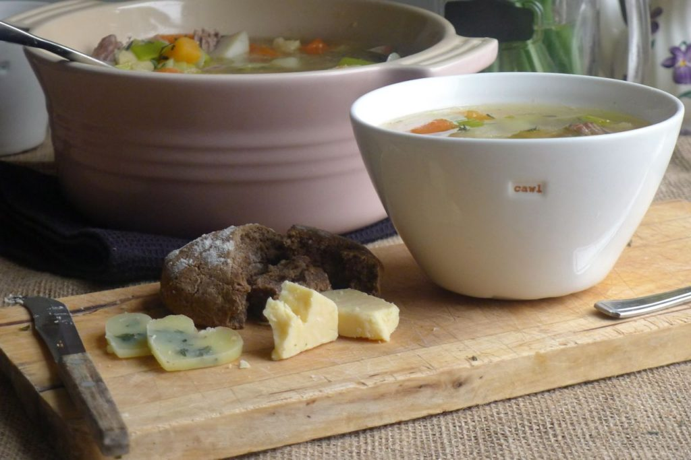

Cawl

Description
Cawl is a thrifty traditional Welsh soup dish, dating back to the 14th
Century. Recipes vary from kitchen to kitchen in Wales, and are often
passed down through families. It is really very simple – a soup made
from a cheap cut of red meat stewed slowly with winter root vegetables,
historically in a cauldron over an open fire.
Ingredients
- Welsh butter / olive oil
- 600g bone-in lamb neck*, weighed with bone in
- Sea salt and freshly ground pepper
- 2 large potatoes, peeled and cubed
- 2 carrots, peeled and cubed
- 2 parsnips, peeled and diced
- 2 small turnips, cleaned (you can leave skin on) and diced
- 1 small swede, peeled and diced
- 2 leeks, thinly sliced
- A few sprigs of thyme or parsley
- To serve: Bread, butter and a hunk of strong cheese – Caerphilly or cheddar.
Steps
- Heat a large deep pan on the stove with a smidge of butter or oil. Sprinkle the lamb with a little salt and pepper, then sear in the pan until browned on all sides – this step is not essential but gives the soup a deeper flavor.
- Add 2 litres of water to the pan, and bring to the boil. Lower to a simmer and add all root vegetables – except the leeks. Simmer uncovered for 2-3 hours, or till the meat is so tender it falls apart. As the fat from the meat rises to the top of the pan you can skim it if you like.
- Twenty minutes before you are ready to serve, add the leeks to the pan.
- When the Cawl is ready, take out the meat and shred it, taking care to discard all the bones. Return the meat to the soup.
- With the rich flavor of the meat you may not need to season the soup, so do taste before you add more salt. Finally, sprinkle with fresh thyme or parsley for a pop of colour and flavor, and serve in deep bowls.
- Notes* Lamb neck can be substituted for other cuts – such as shoulder or even chops, but a better taste is achieved when the bone goes in the stew too.